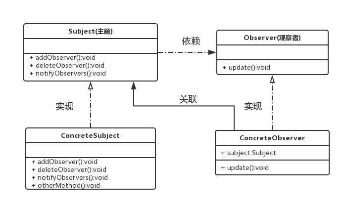

观察者模式
定义：描述了一种一对多的依赖关系，让多个观察者对象同时监听某一个主题对象，这个主题对象在状态变化时，会通知所有的观察者对象，使他们能够自动做出相应的反应。
场景
- 对一个对象状态的更新，需要其他对象同步更新，而且其他对象的数量动态可变
- 当一个对象的数据更新时需要通知其他对象，但这个对象又不希望和被通知的那些对象形成紧耦合
观察者模式结构
观察者模式包含４种角色：
- 主题：一个接口，该接口规定了具体主题需要实现的方法，比如，添加、删除观察者以及通知观察者更新数据的方法
- 观察者：一个接口，该接口规定了具体观察者用来更新数据的方法
- 具体主题：实现主题接口类的一个实例。该实例包含有可以经常发生变化的数据。具体主题需使用一个集合，比如ArrayList，存放观察者的引用，以便数据变化时通知具体观察者
- 具体观察者：实现观察者接口类的一个实例。具体观察者包含有可以存放具体主题引用的主题接口变量，以便具体观察者让具体主题将自己的引用添加到具体主题的集合中，使自己成为它的观察者，或让这个具体主题将自己从具体主题的集合中删除，使自己不再是它的观察者
观察者模式结构的类图如下所示：

进一步了解观察者模式
优点：
- 具体主题和具体观察者是松耦合关系。由于主题接口仅仅依赖于观察者接口，因此具体主题只是知道它的观察者是实现观察者接口的某个类的实例，但不需要知道具体是哪个类。同样，由于观察者仅仅依赖于主题接口，因此具体观察者只是知道它依赖的主题是实现主题接口的某个类的实例，但不需要知道具体是哪个类
- 观察者模式支持广播通讯。被观察者会向所有的登记过的观察者发出通知
缺点：
- 如果一个被观察者对象有很多直接和间接的观察者的话，将所有的观察者都通知到会花费很多时间
- 如果在被观察者之间有循环依赖的话，被观察者会触发它们之间进行循环调用，导致系统崩溃。
代码实例
代码演示的内容：一个大学毕业生希望能及时知道“求职中心”最新的职业需求信息，我们利用观察者模式来模拟这个事件。
主题(Subject):
|
|
观察者(Observer):
|
|
具体主题(ConcreteSubject):
|
|
具体观察者(ConcreteObserver):
|
|
具体调用实现：
|
|
输出：
我是一个大学生，我向文件A.txt写入如下内容：
阿里巴巴需要10个Java程序员。
我是一个大学生，我向文件A.txt写入如下内容：
网易需要8个动画设计师。
我是一个大学生，我向文件A.txt写入如下内容：
网易需要9个前端。